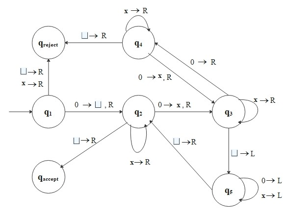

Turing Machines (TMs)
We saw that finite automata recognize regular languages and pushdown automata recognize context-free languages, but both models have fundamental limitations. The Turing machine, introduced by Alan Turing, removes these limitations by providing an infinite tape that serves as both input and unbounded read/write memory. It is the standard model for defining what it means to compute.
A Turing machine is a 7-tuple \((Q, \Sigma, \Gamma, \delta, q_0, q_{\mathrm{accept}}, q_{\mathrm{reject}})\) where \(Q, \Sigma, \Gamma\) are finite sets and
- \(Q\) is the set of states,
- \(\Sigma\) is the input alphabet, not containing the blank symbol \(\sqcup\),
- \(\Gamma\) is the tape alphabet, where \(\sqcup \in \Gamma\) and \(\Sigma \subseteq \Gamma\),
- \(\delta: Q \times \Gamma \to Q \times \Gamma \times \{L, R\}\) is the transition function,
- \(q_0 \in Q\) is the start state,
- \(q_{\mathrm{accept}} \in Q\) is the accept state,
- \(q_{\mathrm{reject}} \in Q\) is the reject state, where \(q_{\mathrm{accept}} \neq q_{\mathrm{reject}}\).
The key differences between a Turing machine and a finite automaton are:
- The tape has infinite length. Initially it contains the input string, with blank symbols (\(\sqcup\)) filling all remaining cells.
- A Turing machine can both read symbols from the tape and write symbols on it.
- The read-write head can move both left (L) and right (R). To store information, the machine writes it on the tape; to retrieve it later, the head moves back to where it was written.
- The accept and reject states take effect immediately upon entry. A computation therefore has three possible outcomes: accept, reject, or loop (run forever without halting).
A Turing machine is strictly more powerful than any finite automaton or pushdown automaton, and is believed to capture the full power of any real computer. If a problem cannot be solved by a Turing machine, it is beyond the theoretical limits of computation.
Let \(M = (Q, \Sigma, \Gamma, \delta, q_0, q_{\mathrm{accept}}, q_{\mathrm{reject}})\) be a Turing machine. A configuration of \(M\) is a triple \((q, t, i)\) consisting of the current state \(q \in Q\), the current tape contents \(t \in \Gamma^{\mathbb{N}}\) (with all but finitely many cells equal to the blank symbol \(\sqcup\)), and the current head position \(i \in \mathbb{N}\) (using 1-indexed positions throughout, in keeping with the site convention \(\mathbb{N} = \{1, 2, 3, \ldots\}\)). We write configurations in the linear notation \(u\, q\, v\), meaning the tape contents are \(uv\) (followed by infinitely many blanks), the machine is in state \(q\), and the head is positioned on the first symbol of \(v\). For example, the configuration \(1001\, q_5\, 0110\) represents a tape containing \(10010110\), with \(M\) in state \(q_5\) and the head on the fifth symbol (the first \(0\) after the state label).
Configuration \(C\) yields configuration \(C'\), written \(C \vdash C'\), if \(C'\) is obtained from \(C\) by a single application of \(\delta\) to the current state and the symbol under the head: writing the new symbol, moving the head one cell left or right (clamped at the left end of the tape), and updating the state. The relation \(\vdash\) is undefined when the current state is \(q_{\mathrm{accept}}\) or \(q_{\mathrm{reject}}\): the machine halts immediately upon entering either, regardless of the value of \(\delta\) at that configuration.
The start configuration of \(M\) on input \(w \in \Sigma^*\) is \(q_0 w\) (state \(q_0\), tape contents \(w\) followed by blanks, head on the first symbol of \(w\)). An accepting configuration is any configuration whose state is \(q_{\mathrm{accept}}\); a rejecting configuration is any whose state is \(q_{\mathrm{reject}}\). \(M\) accepts input \(w\) if there exists a finite sequence of configurations \(C_1, C_2, \ldots, C_k\) with \(C_1\) the start configuration on \(w\), \(C_i \vdash C_{i+1}\) for each \(i\), and \(C_k\) accepting. The language recognized by \(M\) is \[ L(M) = \{ w \in \Sigma^* \mid M \text{ accepts } w \}. \]
\(M\) halts on \(w\) if it reaches an accepting or rejecting configuration in finitely many steps; otherwise \(M\) loops on \(w\). \(M\) rejects \(w\) if it halts on \(w\) by reaching a rejecting configuration.
A language \(L\) is Turing-recognizable (or recursively enumerable) if some Turing machine recognizes it - that is, the machine accepts every string in \(L\), but may loop forever on strings not in \(L\).
A language \(L\) is Turing-decidable (or simply decidable) if some Turing machine decides it — that is, the machine halts on every input, accepting strings in \(L\) and rejecting strings not in \(L\).
Every decidable language is Turing-recognizable, but the converse does not hold - some Turing-recognizable languages are not decidable. The distinction hinges on whether the machine is guaranteed to halt.
Consider a language \[ L_1 = \{0^{2^n} \mid n \geq 0\} \] which generates all strings of \(0\)s whose length is a power of 2.
A Turing machine \(M_1\) must decide \(L_1\):
\(M_1 = \) "On input string \(w\): "
- Read left to right across the tape, crossing out every other \(0\).
- If in Stage 1, the tape contained a single \(0\), accept.
- If in Stage 1, the tape contained more than a single \(0\) and the number of \(0\)s was odd, reject.
- Return the head to the left-hand end of the tape.
- Go back to Stage 1."
Note: in the state diagram below, Stage 1's "crossing out every other \(0\)" is realized by first replacing the leftmost \(0\) with a blank \(\sqcup\) (which serves as the left-end marker the head later returns to in Stage 4) and then replacing every other subsequent \(0\) with an "x". The trace that follows illustrates exactly this behavior.
\(Q = \{q_1, q_2, q_3, q_4, q_5, q_{\mathrm{accept}}, q_{\mathrm{reject}}\}, \, \Sigma = \{0\}, \, \Gamma = \{0, \text{ x }, \sqcup\}\), and the state diagram is as follows:

For example, if input is \(0000\), the sequence of configurations is as follows \[ \begin{align*} &q_1 0 0 0 0 \vdash \sqcup q_2 0 0 0 \vdash \sqcup \text{x} q_3 0 0 \vdash \sqcup \text{x} 0 q_4 0 \\\\ &\vdash \sqcup \text{x} 0 \text{x} q_3 \sqcup \vdash \sqcup \text{x} 0 q_5 \text{x} \sqcup \vdash \sqcup \text{x} q_5 0 \text{x} \sqcup \\\\ &\vdash \sqcup q_5 \text{x} 0 \text{x} \sqcup \vdash q_5 \sqcup \text{x} 0 \text{x} \sqcup \vdash \sqcup q_2 \text{x} 0 \text{x} \sqcup \\\\ &\vdash \sqcup \text{x} q_2 0 \text{x} \sqcup \vdash \sqcup \text{x} \text{x} q_3 \text{x} \sqcup \vdash \sqcup \text{x} \text{x} \text{x} q_3 \sqcup \\\\ &\vdash \sqcup \text{x} \text{x} q_5 \text{x} \sqcup \vdash \sqcup \text{x} q_5 \text{x} \text{x} \sqcup \vdash \sqcup q_5 \text{x} \text{x} \text{x} \sqcup \\\\ &\vdash q_5 \sqcup \text{x} \text{x} \text{x} \sqcup \vdash \sqcup q_2 \text{x} \text{x} \text{x} \sqcup \vdash \sqcup \text{x} q_2 \text{x} \text{x} \sqcup \\\\ &\vdash \sqcup \text{x} \text{x} q_2 \text{x} \sqcup \vdash \sqcup \text{x} \text{x} \text{x} q_2 \sqcup \vdash \sqcup \text{x} \text{x} \text{x} \sqcup q_{\mathrm{accept}}. \end{align*} \]
Multitape Turing Machines
A natural extension of the basic Turing machine model is to allow several tapes, each with its own independent read/write head. Initially the input appears on tape 1, and the remaining tapes start out blank. The transition function is generalized to allow simultaneous reading, writing, and head movement across all tapes.
A multitape Turing machine with \(k\) tapes is a Turing machine whose transition function has the form \[ \delta\colon Q \times \Gamma^k \to Q \times \Gamma^k \times \{L, R, S\}^k, \] where \(k \geq 1\) is the number of tapes. The expression \[ \delta(q_i, a_1, \ldots, a_k) = (q_j, b_1, \ldots, b_k, L, R, \ldots, L) \] means that if the machine is in state \(q_i\) and the heads on tapes \(1\) through \(k\) are reading symbols \(a_1\) through \(a_k\), then the machine transitions to state \(q_j\), writes \(b_1\) through \(b_k\) on the corresponding tapes, and directs each head to move left (\(L\)), right (\(R\)), or stay in place (\(S\)) as specified.
Multitape Turing machines appear more powerful than the single-tape model — for instance, a two-tape machine can recognize the language \(\{0^k 1^k \mid k \geq 0\}\) in linear time, whereas any single-tape machine requires \(\Omega(n \log n)\) time. Yet in terms of what can be computed (recognizability and decidability), the two models are equivalent.
Every multitape Turing machine has an equivalent single-tape Turing machine — that is, one that recognizes the same language.
Given a \(k\)-tape Turing machine \(M\), we construct a single-tape machine \(S\) that simulates \(M\). The single tape of \(S\) represents the contents of all \(k\) tapes of \(M\) by storing them consecutively, separated by a fresh delimiter symbol \(\#\): \[ \# \, \text{tape}_1 \, \# \, \text{tape}_2 \, \# \, \cdots \, \# \, \text{tape}_k \, \#. \] To track each head's position, \(S\) marks the cell where \(M\)'s head currently sits on each tape with a "dotted" version of that symbol (a new symbol added to the tape alphabet). For instance, if \(M\)'s tape \(i\) contains \(010\) with the head on the middle \(1\), \(S\) records \(\#0\dot{1}0\#\).
On input \(w\), \(S\) first formats its tape into this representation (with \(w\) on tape 1 and the remaining tapes blank). To simulate one step of \(M\), \(S\) scans across its tape from the leftmost \(\#\) to the \((k+1)\)-st \(\#\) to read the symbols under all virtual heads, then makes a second pass to update the contents and head positions according to \(M\)'s transition function. If a virtual head moves rightward onto a delimiter \(\#\), \(S\) shifts the tape contents to the right of that delimiter one cell further right, opening up a fresh blank cell for the head to occupy. \(S\) accepts (or rejects) precisely when \(M\) does. Hence \(S\) recognizes the same language as \(M\). \(\blacksquare\)
This equivalence justifies our continued use of the single-tape model as the "standard" Turing machine: multitape machines may be more convenient to design, but they offer no additional computational power. However, when we turn to time complexity, the choice of model does matter — see single-tape vs. multitape simulation, which quantifies the time overhead of this simulation.